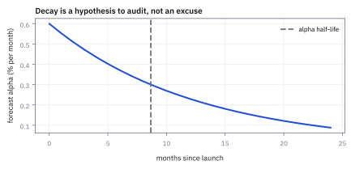

15.7 Alpha Decay and Crowding
สัญญาณที่เคยทำเงินจางลงตามเวลาและหดตามขนาดเงิน หน้านี้คำนวณว่ากองทุนรับเงินได้เท่าไร เงินของผู้ลงทุนได้ผลตอบแทนจริงเท่าไร และถ้าทุกคนต้องขายพร้อมกันจะใช้เวลากี่วัน
กลยุทธ์หุ้นตัวหนึ่งเปิดมาครบ 12 เดือน ตอนเปิดทีมวิจัยคาด alpha ไว้ 0.50% ต่อเดือน และคาดว่าจะจางลงด้วยอัตรา $k=0.08$ ต่อเดือน กองทุนมีเงิน \$100 ล้าน ต้นทุนซื้อขายต่อเดือนคือ $0.05\%+0.04\%\sqrt{A/A_0}$ ของเงินกองทุน เมื่อ $A$ คือขนาดกองทุนและ $A_0$ คือ \$10 ล้าน คณะกรรมการลงทุนตั้งเกณฑ์ว่า alpha สุทธิต้องไม่ต่ำกว่า 0.20% ต่อเดือน ผู้จัดการเสนอว่า “ต่ำกว่าเกณฑ์นิดเดียว คืนเงินลูกค้าครึ่งหนึ่งให้เหลือ \$50 ล้านก็ผ่านแล้ว” จริงไหม?
ลองตอบก่อนเปิดเฉลย
ไม่จริง หลัง 12 เดือนสัญญาณเหลือ $0.50\%\times e^{-0.96}=0.1914\%$ ที่ \$100 ล้าน ต้นทุน 0.1765% เหลือสุทธิ 0.0150% หรือ \$14,955 ต่อเดือน ที่ \$50 ล้าน ต้นทุนลดเหลือ 0.1394% สุทธิ 0.0520% ยังห่างเกณฑ์มาก ต่อให้เงินเกือบเป็นศูนย์ ต้นทุนคงที่ 0.05% ก็ยังอยู่ สุทธิได้อย่างมาก 0.1414% ไม่มีขนาดไหนผ่านเกณฑ์เลย เพราะตัวสัญญาณตกต่ำกว่า 0.25% ตั้งแต่เดือนที่ 8.66 ทางเลือกจริงคือหยุดกลยุทธ์หรือวิจัยสัญญาณใหม่ ไม่ใช่ย่อกองทุน
สิ่งที่เราจะสร้าง
15.2 นิยาม alpha ว่าเป็นผลตอบแทนที่เหลือหลังหักส่วนที่ได้จากตลาด และ 15.6 หักต้นทุนการซื้อขายออกจากกำไรในบรรทัดเดียวกัน หน้านี้ถามต่อว่า alpha ที่มีวันนี้จะเหลือเท่าไรในอีกหนึ่งปี และเมื่อเงินในกองทุนโตขึ้น ต้นทุนจะกินมันไปเท่าไร
เราสร้างทีละขั้น: แบบจำลองการจางของสัญญาณ ต้นทุนที่โตตามขนาดเงิน capacity ตอนเปิดและ capacity ที่หดตามเวลา ขนาดที่ทำเงินรวมสูงสุดและเป็นประโยชน์ของใคร ผลตอบแทนที่เงินของผู้ลงทุนได้จริง drawdown เวลาที่ใช้ขายออก และสุดท้ายวันที่ทุกคนวิ่งออกพร้อมกัน วัดเป็นจำนวน SD
ศัพท์ที่ใช้ในหัวข้อนี้
- Alpha decay
- การที่ผลตอบแทนส่วนเกินของสัญญาณลดลงตามเวลา เพราะคนอื่นค้นพบและเทรดแบบเดียวกัน ราคาจึงปรับเร็วขึ้นจนเหลือกำไรน้อยลง ใช้กำหนดว่าต้องทบทวนสัญญาณบ่อยแค่ไหน
- Capacity
- ขนาดกองทุนที่ใหญ่ที่สุดที่ alpha หลังหักต้นทุนยังผ่านเกณฑ์ที่ตั้งไว้ ใช้ตัดสินว่าจะรับเงินเพิ่มหรือปิดรับ
- Market impact
- ราคาที่ขยับหนีเราเพราะคำสั่งของเราเอง ยิ่งสั่งมากเทียบกับปริมาณที่ตลาดซื้อขาย ราคายิ่งขยับ เป็นต้นทุนที่ไม่มีใบเสร็จ แต่จ่ายจริงทุกครั้ง
- Crowding
- สภาพที่หลายกองทุนถือสถานะคล้ายกัน วันที่ต้องออก ทุกคนขายหุ้นชุดเดียวกันพร้อมกัน ราคาจึงร่วงแรงกว่าที่ข้อมูลช่วงปกติบอก
- Time-weighted และ money-weighted return
- ตัวแรกต่อผลตอบแทนแต่ละงวดเข้าด้วยกันโดยไม่สนว่ามีเงินอยู่เท่าไร ใช้วัดฝีมือผู้จัดการ ตัวหลังคืออัตราที่ทำให้เงินเข้าออกของผู้ลงทุนมีมูลค่าปัจจุบันเป็นศูนย์ บอกว่าเงินของผู้ลงทุนได้เท่าไรจริง
- Drawdown
- NAV วันนี้ต่ำกว่ายอดสูงสุดที่เคยทำได้กี่เปอร์เซ็นต์ ผู้ลงทุนมักถอนเงินเมื่อตัวเลขนี้ลึก
- ADV และ participation rate
- ADV คือมูลค่าซื้อขายเฉลี่ยต่อวันของหุ้น participation rate คือสัดส่วนของ ADV ที่เรายอมซื้อขายเองในหนึ่งวันโดยไม่ดันราคามากเกินไป สองตัวนี้กำหนดว่าต้องใช้กี่วันจึงขายสถานะหมด
สัญลักษณ์และหน่วย
| สัญลักษณ์ | ความหมาย | หน่วย |
|---|---|---|
| $\alpha_0,\ \alpha_t$ | alpha ก่อนหักต้นทุน ตอนเปิดและหลังเปิด $t$ เดือน | สัดส่วนต่อเดือน |
| $k,\ t_{1/2}$ | อัตราการจาง และเวลาที่ alpha เหลือครึ่งหนึ่ง (half-life) | ต่อเดือน และเดือน |
| $A,\ A_0$ | ขนาดกองทุน และขนาดอ้างอิง \$10 ล้าน | \$ ล้าน |
| $c_0,\ c_1,\ C(A)$ | ต้นทุนคงที่ ค่าคงที่ของ impact และต้นทุนรวมที่ขนาด $A$ | สัดส่วนของเงินกองทุนต่อเดือน |
| $b$ | เกณฑ์ขั้นต่ำของ alpha สุทธิ | สัดส่วนต่อเดือน |
| $A_{\max}(t),\ A_{\rm zero},\ A^{*}$ | capacity ที่เกณฑ์ $b$ ขนาดที่ alpha สุทธิเป็นศูนย์ และขนาดที่กำไรรวมสูงสุด | \$ ล้าน |
| $\Pi(A)$ | กำไรรวมต่อเดือนเป็นเงิน | \$ ล้านต่อเดือน |
| $r_{\rm TW},\ r_{\rm MW}$ | time-weighted และ money-weighted return | สัดส่วนต่อปี |
| $M_t,\ \mathrm{DD}_t$ | ยอด NAV สูงสุดถึงวันนี้ และ drawdown | USD และสัดส่วน |
| $Q,\ v,\ p,\ T$ | สถานะที่ต้องขาย ADV participation rate และจำนวนวันที่ใช้ขาย | \$ ล้าน, \$ ล้านต่อวัน, สัดส่วน, วัน |
ขั้นที่ 1 — สมมติฐานการจาง: แต่ละเดือนหายไปเป็นสัดส่วนของที่เหลือ
ก่อนเทียบกับต้นทุน เราต้องมีตัวเลข alpha ของแต่ละเดือนข้างหน้า สมมติฐานที่ง่ายและตรวจได้คือ ยิ่งเหลือ alpha มาก คนยิ่งแห่เข้ามาแย่งมาก มันจึงหายเร็วตามไปด้วย เขียนเป็นอัตราการเปลี่ยนที่เป็นสัดส่วนกับค่าที่เหลือ แล้วแก้สมการ
แถวแรกคือสมมติฐานทั้งหมด ที่เหลือเป็นพีชคณิต หาร $\alpha$ ไปฝั่งซ้ายได้เพราะ alpha ยังเป็นบวก แล้ว integrate ทั้งสองฝั่งจากเวลา 0 ถึง $t$ ได้ log ของอัตราส่วน ยกกำลัง $e$ กลับได้รูป exponential half-life คือ 8.66 เดือน เป็นสูตรเดียวกับ half-life ของ spread ใน 15.4 ขั้นที่ 3
อย่าอ่าน $k=0.08$ ว่าหายเดือนละ 8% หนึ่งเดือนเหลือ $e^{-0.08}=0.9231$ คือหาย 7.69% เพราะ $k$ เป็นอัตราแบบต่อเนื่อง หลัง 12 เดือนเหลือ $e^{-0.96}=0.3829$ ของตอนเปิด รูป exponential เป็นสมมติฐานที่ต้องตรวจ ไม่ใช่กฎ ของจริงอาจหายทีเดียวเมื่อมีคนตีพิมพ์วิธีเดียวกัน
Figure 15.7a — alpha ที่คาดไว้ลดลงตามเวลา

ขั้นที่ 2 — ต้นทุนโตตามขนาดเงิน และเกณฑ์ที่ต้องผ่าน
alpha เป็นเปอร์เซ็นต์ของเงินทุกดอลลาร์ แต่ต้นทุนต่อดอลลาร์ไม่คงที่ กองทุนใหญ่ต้องส่งคำสั่งใหญ่ ราคาจึงขยับหนีมากกว่า เรารับรูปต้นทุนต่อไปนี้เป็นข้อกำหนดของโจทย์ ส่วนคงที่ $c_0$ (ค่านายหน้าและ bid–ask spread) บวกส่วน market impact ที่โตตามรากที่สองของขนาด ซึ่งเป็นกฎเชิงประจักษ์ที่ใช้กันแพร่หลาย เรียกว่า square-root impact
นับ $A$ เป็นหน่วย \$ ล้าน กองทุน \$10 ล้านจ่าย impact 0.04% ต่อเดือน กองทุน \$40 ล้านจ่าย 0.08% เงินสี่เท่าทำให้ impact แค่สองเท่า เพราะรากที่สองของ 4 คือ 2 ต้นทุนจึงโตช้ากว่าเงิน capacity จึงใหญ่กว่าที่คนมักเดา แต่ก็มีขอบ
แถวสุดท้ายคือกติกาของคณะกรรมการ alpha สุทธิต้องไม่ต่ำกว่า $b$ ไม่ใช่แค่มากกว่าศูนย์ เพราะ alpha เป็นค่าประมาณที่คลาดได้มาก (15.2 ขั้นที่ 7 ได้ SE ของ alpha 0.19% ต่อเดือนจากห้าเดือน) และยังมีค่าธรรมเนียมที่ต้องจ่าย $b$ จึงเป็นระยะเผื่อความผิดของแบบจำลอง
ขั้นที่ 3 — capacity ตอนเปิด: ไล่ย้อนจากเกณฑ์กลับไปหาขนาดเงิน
โจทย์ให้อะไรมาบ้าง: ตอนเปิด $t=0$ alpha 0.50% ต่อเดือน ต้นทุนตามขั้นที่ 2 และเกณฑ์ $b=0.20\%$ ถามว่ารับเงินได้มากที่สุดเท่าไรที่ยังผ่านเกณฑ์
คำตอบ: capacity ตอนเปิดคือ \$390.625 ล้าน ถ้ารับเงินเกินนี้ alpha สุทธิจะต่ำกว่า 0.20% ทันที ตัวเลขนี้ใช้ alpha ตอนเปิด 0.50% และขั้นที่ 5 จะแสดงว่ามันหดเร็วแค่ไหนเมื่อ alpha จาง
ตรวจเองใน 10 วินาที: $\sqrt{39.0625}=6.25$ คูณ 0.04% ได้ 0.25% บวก 0.05% ได้ 0.30% และ $0.50\%-0.30\%=0.20\%$ ตรงเกณฑ์พอดี
Figure 15.7b — ต้นทุนที่โตตามขนาดเงินบีบ alpha สุทธิ

ขั้นที่ 4 — ครบ 12 เดือนที่ \$100 ล้าน: คำตอบของโจทย์เปิด
โจทย์ให้อะไรมาบ้าง: $t=12$ เดือน กองทุน \$100 ล้าน ($A/A_0=10$) และข้อเสนอให้ย่อเหลือ \$50 ล้าน ($A/A_0=5$) ต้นทุนและเกณฑ์ตามขั้นที่ 2
คำตอบ: ที่ \$100 ล้าน alpha ก่อนต้นทุนเป็นเงิน \$191,446 ต้นทุน \$176,491 เหลือสุทธิ \$14,955 ต่อเดือน ย่อเหลือ \$50 ล้านได้สุทธิ 0.0520% และต่อให้เงินเกือบเป็นศูนย์ ส่วนคงที่ $c_0$ ยังอยู่ ได้อย่างมาก 0.1414% ต่ำกว่าเกณฑ์ 0.20% ทุกขนาด ข้อเสนอของผู้จัดการจึงผิด ปัญหาไม่ได้อยู่ที่เงินมากไป แต่อยู่ที่สัญญาณเหลือน้อยไป
ตรวจเองใน 10 วินาที: $0.5\times0.38\approx0.19$ และ $\sqrt{10}\approx3.16$ ทำให้ต้นทุนราว $0.126+0.05\approx0.18$ ผลต่างราว 0.015% ของ \$100 ล้านคือราว \$15,000
ขั้นที่ 5 — capacity หดเร็วกว่า alpha
ขั้นที่ 3 คำนวณ capacity ครั้งเดียวตอนเปิด ขั้นที่ 4 แสดงว่าตัวเลขนั้นหมดอายุแล้ว จึงเขียน capacity เป็นฟังก์ชันของเวลา แล้วหาว่าเมื่อไรมันเป็นศูนย์ และเมื่อไรกองทุน \$100 ล้านเริ่มไม่ผ่านเกณฑ์
แถวที่สองได้จากการแก้แถวแรกแบบเดียวกับขั้นที่ 3 แต่ใช้ $\alpha_t$ แทน 0.50% สูตรนี้ใช้ได้เมื่อ $\alpha_t$ เกิน $c_0+b$ ถ้าไม่เกิน capacity เป็นศูนย์ เพราะแม้เงินน้อยมากก็ไม่ผ่าน
capacity ขึ้นกับกำลังสองของ “ที่ว่าง” เหนือ $c_0+b$ ไม่ใช่ตัว alpha เอง เดือนที่ 3 alpha ลดจาก 0.50% เป็น 0.3933% หายไป 21% แต่ที่ว่างลดจาก 0.25 จุดเป็น 0.1433 จุด หายไป 43% และ capacity ลดจาก \$390.6 ล้านเหลือ \$128.4 ล้าน หายไป 67%
เดือน 0, 3, 6, 8 ได้ capacity \$390.6, \$128.4, \$22.0 และ \$1.2 ล้าน แล้วเป็นศูนย์ตั้งแต่เดือนที่ 8.66 ซึ่งบังเอิญเท่ากับ half-life เพราะในโจทย์นี้ $c_0+b$ เป็นครึ่งหนึ่งของ 0.50% พอดี ไม่ใช่กฎทั่วไป
กองทุน \$100 ล้านผ่านเกณฑ์อยู่แค่ 3.55 เดือนแรก คณะกรรมการที่คำนวณ capacity ใหม่ทุกเดือนจะเห็นปัญหาตั้งแต่เดือนที่ 4 ไม่ใช่เดือนที่ 12
ขั้นที่ 6 — ขนาดที่ทำเงินรวมสูงสุด: 4/9 ของจุดคุ้มทุน และเป็นประโยชน์ของใคร
ผู้จัดการที่รับค่าธรรมเนียมเป็นสัดส่วนของเงินกองทุนสนใจอีกคำถาม: ขนาดไหนทำกำไรรวมเป็นดอลลาร์ได้มากที่สุด กำไรรวมต่อเดือนคือขนาดคูณ alpha สุทธิ หาจุดที่อนุพันธ์เป็นศูนย์ (ใช้ alpha ตอนเปิด $\alpha_0=0.50\%$ และนับ $A$ เป็น \$ ล้าน)
ตัวที่ต้องระวังคืออนุพันธ์ของ $A^{3/2}$ ซึ่งได้ $\tfrac32A^{1/2}$ ตัวคูณ 3/2 นี้คือที่มาของ 2/3 ยกกำลังสองจึงได้ 4/9 อนุพันธ์อันดับสองคือ $-\tfrac34c_1/\sqrt{A_0A}$ ติดลบเสมอ จุดนี้จึงเป็นจุดสูงสุด ไม่ใช่ต่ำสุด
ที่ $A^*$ เท่ากับ \$562.5 ล้าน alpha สุทธิคือ $0.45\%-0.04\%\times7.5=0.15\%$ กำไรรวม \$843,750 ต่อเดือน แต่ \$562.5 ล้านเกิน capacity \$390.6 ล้านของขั้นที่ 3 และ 0.15% ต่ำกว่าเกณฑ์ 0.20%
ที่ capacity กำไรรวมคือ \$781,250 การรับเงินเพิ่มอีก 44% ทำเงินรวมเพิ่มแค่ 8% (\$62,500) แต่ตัด alpha ของทุกดอลลาร์ลง 25% จุดสูงสุดนี้เป็นประโยชน์ของผู้จัดการ ไม่ใช่ของผู้ลงทุนแต่ละคน
ขั้นที่ 7 — ผลตอบแทนที่รายงาน กับผลตอบแทนที่เงินของผู้ลงทุนได้จริง
โจทย์ให้อะไรมาบ้าง: กองทุน 1 ปีแรกมีเงิน \$1 ล้าน ได้ +20% เป็น \$1.2 ล้าน ผู้ลงทุนเห็นผลดีจึงใส่เพิ่ม \$8.8 ล้าน ปีที่สองเริ่มที่ \$10 ล้าน ได้ −10% จบที่ \$9 ล้าน กองทุน 2 กลับกัน ปีแรก \$10 ล้าน ได้ +20% เป็น \$12 ล้าน ผู้ลงทุนถอน \$11 ล้าน ปีที่สองเหลือ \$1 ล้าน ได้ −10% จบที่ \$0.9 ล้าน
time-weighted return ต่อผลตอบแทนรายปีเข้าด้วยกัน money-weighted return คืออัตรา $r$ ที่ทำให้มูลค่าปัจจุบันของเงินเข้าออกฝั่งผู้ลงทุนเป็นศูนย์ (หน่วย \$ ล้าน ใส่เงินเป็นลบ ได้คืนเป็นบวก) กองทุน 1 คือ −1, −8.8, +9 กองทุน 2 คือ −10, +11, +0.9 ตั้ง $x=1/(1+r)$ สมการจะเป็นกำลังสอง
คำตอบ: ทั้งสองกองรายงาน time-weighted 3.92% ต่อปีเท่ากัน เพราะผลตอบแทนรายปีเหมือนกัน ต่างกันแค่ขนาดเงิน แต่เงินของผู้ลงทุนกองแรกได้ −7.46% ต่อปี (ใส่ \$9.8 ล้าน ได้คืน \$9 ล้าน ขาดทุน \$800,000) กองที่สองได้ +17.65% ต่อปี (กำไร \$1.9 ล้าน) กองแรกคือเส้นทางปกติของกลยุทธ์ที่ alpha จาง: เงินไหลเข้าหลังปีที่ดี พอดีกับที่ capacity หด
ตรวจเองใน 10 วินาที: $1.2\times0.9=1.08$ และ $\sqrt{1.08}\approx1.039$ แทน $x=1.0806$ กลับ ได้ $9(1.1677)-8.8(1.0806)-1=10.509-9.509-1=0$ รากอีกตัว $(8.8-10.65)/18$ ติดลบ ใช้ไม่ได้เพราะ $1+r$ ต้องเป็นบวก
ขั้นที่ 8 — drawdown: ห่างจากยอดสูงสุดเท่าไร
ผู้ลงทุนไม่ได้ดูแค่ผลตอบแทนเฉลี่ย เขาดูว่าเงินตกจากจุดสูงสุดลึกแค่ไหน และมักถอนเงินเมื่อมันลึก การถอนบังคับให้กองทุนขาย ซึ่งพาไปขั้นที่ 9 นิยามก่อน แล้วแทนตัวเลขของกองทุนที่เคยแตะ \$1.2 ล้านแล้วลงมาอยู่ที่ \$1,032,900 (กฎการคุม drawdown เต็ม ๆ อยู่ใน 17.6)
$M_t$ ไม่เคยลดลง เพราะเป็นค่าสูงสุดของทุกวันที่ผ่านมา NAV จึงไม่มีทางเกินมัน DD จึงเป็นศูนย์หรือติดลบเสมอ กองทุนนี้อยู่ต่ำกว่ายอด 13.925% หรือ \$167,100 และต้องขึ้น 16.18% จึงกลับถึงยอดเดิม มากกว่า 13.925% เพราะการขึ้นคิดจากฐานที่เล็กลงแล้ว
ขั้นที่ 9 — ขายออกได้เร็วแค่ไหน: ADV, participation และความเสี่ยงระหว่างทาง
ขายสถานะใหญ่ทีเดียวไม่ได้ ราคาจะร่วงเพราะคำสั่งของเราเอง จึงจำกัดว่าแต่ละวันขายได้ไม่เกิน $p$ ของ ADV ระหว่างนั้นส่วนที่ยังขายไม่หมดยังเสี่ยงอยู่ ตัวอย่าง: สถานะ \$30 ล้าน วันปกติ ADV \$100 ล้านที่ $p=10\%$ วันเครียด ADV \$40 ล้านที่ $p=5\%$ เพราะทุกคนขายหุ้นชุดเดียวกัน ความผันผวนรายวันของราคา $\sigma$ เป็น 2% และ 4% (ตัวเลขสมมติ)
ขายเท่ากันทุกวัน วันที่ $d$ ยังถือส่วนที่ขายไม่หมด $(T-d+1)/T$ ของ $Q$ ถ้าราคาแต่ละวันขยับอิสระกัน variance ของแต่ละวันบวกกันได้ ตั้ง $m=T-d+1$ ซึ่งไล่จาก $T$ ลงมา 1 แล้วใช้สูตรผลบวกกำลังสอง $1^2+\dots+T^2=T(T+1)(2T+1)/6$ ที่ $T=3$ ได้ $1+\tfrac49+\tfrac19=\tfrac{14}{9}$ และรากที่สองคือ 1.247
3 วันกับ 15 วันต่างกันห้าเท่า ในเงิน ความผันผวนของกำไรขาดทุนระหว่างขายคือ \$748,331 กับ \$2,817,091 ต่างกัน 3.76 เท่า มาจากสองตัวคูณกัน เวลาที่ยืดคูณ 1.88 และความผันผวนที่เพิ่มเป็นสองเท่าคูณ 2 แผนออกที่คิดจากวันปกติจึงประเมินความเสี่ยงต่ำไปเกือบสี่เท่า
Figure 15.7c — วันที่สภาพคล่องหาย เวลาขายยืดห้าเท่า

ขั้นที่ 10 — วันที่ทุกคนออกพร้อมกัน: นับเป็น SD ของช่วงสงบ
ความเสี่ยงของ crowding ไม่อยู่ในข้อมูลช่วงปกติ มันเกิดเมื่อหลายกองทุนที่ถือหุ้นชุดคล้ายกันต้องขายพร้อมกัน Figure 15.7d วาดสถานการณ์นี้จากสูตร ลองวัดการร่วงด้วยไม้บรรทัดของช่วงสงบ แล้วถามว่าแบบจำลอง normal ให้โอกาสเท่าไร
ช่วงสงบ NAV แกว่งอยู่ระหว่าง 99.998 ถึง 101.198 เพราะเป็นผลบวกสะสมของคลื่น sine การเปลี่ยนรายวัน 29 วันแรกมีความผันผวน $s=0.1052$ จุด ช่วงออกพร้อมกัน เส้น crowded-exit ลดเพิ่มวันละ $12/19=0.632$ จุด เท่ากับ 6 เท่าของ $s$ ทุกวัน ติดกัน 19 วัน
ถ้าเชื่อว่าแต่ละวันอิสระกันด้วย SD เท่ากับ $s$ ผลรวม 19 วันมี SD $s\sqrt{19}$ การร่วง 12 จุดจึงเป็น 26 SD แถวที่ integrate ใช้ integration by parts เพราะ $\varphi'(x)=-x\varphi(x)$ ทำให้ $\varphi(x)$ เท่ากับอนุพันธ์ของ $-\varphi(x)/x$ ลบ $\varphi(x)/x^2$ พจน์ที่เหลือเล็กกว่าพจน์แรกราว $1/z^2$ เท่า
โอกาส $3.1\times10^{-138}$ ต่อวัน คือราวครั้งเดียวใน $10^{135}$ ปีที่มี 252 วันทำการ ข้อสรุปจึงไม่ใช่ “โชคร้ายมาก” แต่คือ SD ที่ใช้วัดมาจากคนละสภาพตลาด ผู้บริหารของ Goldman Sachs พูดถึงเดือนสิงหาคม 2007 ว่าเห็นการขยับขนาด 25 SD หลายวันติดกัน
Figure 15.7d — ทางเดินของ NAV เมื่อไม่มีและมีการออกพร้อมกัน

คำถามที่ควรถามออกมาดัง ๆ
ทำไมไม่วัดการจางจากผลตอบแทนจริงไปเลย? เพราะมันจมอยู่ในความผันผวน สมมติ residual ของกลยุทธ์ผันผวน 2% ต่อเดือน ค่าเฉลี่ย 12 เดือนมี SE $2\%/\sqrt{12}=0.577\%$ มากกว่าตัว alpha 0.50% เสียอีก จะให้ t ถึง 2 กับ alpha คงที่ 0.50% ต้องใช้ $(2\times2/0.5)^2=64$ เดือน หรือ 5.3 ปี ขณะที่ half-life คือ 8.66 เดือน สัญญาณจางเร็วกว่าที่ข้อมูลจะวัดได้ จึงต้องแยกติดตามทีละก้อน
4/9 ใช้ได้กับทุกกลยุทธ์ไหม? ไม่ มันมาจากต้นทุนแบบรากที่สอง ถ้า impact เป็น $c_1(A/A_0)^\beta$ ทำขั้นที่ 6 ซ้ำจะได้ $(A^*/A_{\rm zero})^\beta=1/(1+\beta)$ ที่ $\beta=0.5$ ได้ 4/9 ที่ $\beta=1$ ได้ 1/2 ที่ $\beta=2$ ได้ 0.577 สิ่งที่ควรจำคือวิธีคิด ไม่ใช่เลข 4/9
ค่าเฉลี่ยแบบไหนถูก? ขึ้นกับว่าถามแทนใคร ครอบครัว 30% ไม่มีลูก 30% มีหนึ่งคน 25% มีสอง 15% มีสาม ค่าเฉลี่ยต่อครอบครัวคือ 1.25 คน แต่ถ้าสุ่มถามเด็กว่าบ้านมีลูกกี่คน ครอบครัวที่มีลูก $k$ คนถูกเจอบ่อยเป็น $k$ เท่า ค่าเฉลี่ยที่ได้คือ $\sum k^2p_k/\sum kp_k=2.65/1.25=2.12$ เด็ก 36% อยู่บ้านที่มีลูกสามคน ทั้งที่บ้านแบบนี้มีแค่ 15%
ด่านตรวจคนเข้าเมืองก็เหมือนกัน สิบชั่วโมงเงียบมีชั่วโมงละ 50 คนรอ 10 นาที สองชั่วโมงเร่งด่วนมีชั่วโมงละ 500 คนรอ 60 นาที เฉลี่ยรายชั่วโมงได้ 18.3 นาที แต่ผู้โดยสาร 1,500 คนรอเฉลี่ย 43.3 นาที time-weighted ในขั้นที่ 7 คือค่าเฉลี่ยรายชั่วโมง money-weighted คือค่าเฉลี่ยของผู้โดยสาร ปีที่มีเงินมากถ่วงมากกว่า
ความผิดที่ทำให้กองทุนรับเงินเกินและออกไม่ทัน
คำนวณ capacity ครั้งเดียวตอนเปิด: \$390.6 ล้านเป็นจริงแค่วันแรก เดือนที่ 3 เหลือ \$128.4 ล้าน และเป็นศูนย์หลังเดือนที่ 8.66 กองทุนที่ยึดตัวเลขตอนเปิดจะรับเงินเพิ่มในช่วงที่ควรปิดรับ
รายงานค่าเฉลี่ยเลขคณิตเป็น time-weighted: ปี +20% กับ −10% เฉลี่ยเลขคณิตได้ 5% แต่เงินที่อยู่ครบสองปีโตแค่ $1.2\times0.9=1.08$ หรือ 3.92% ต่อปี และถ้าเงินส่วนใหญ่เข้ามาในปีที่ขาดทุน ผู้ลงทุนได้ −7.46% ค่าเฉลี่ยถ่วงเงินแบบหยาบ $(1\times20\%-10\times10\%)/11=-7.27\%$ ใกล้ แต่ยังไม่ใช่อัตราที่เงินได้จริง
วางแผนออกจาก ADV ของวันปกติ: 3 วันกลายเป็น 15 วัน และความผันผวนของเงินระหว่างขายโต 3.76 เท่า
เรียกวัน 25 SD ว่าโชคร้าย: ภายใต้ normal โอกาสคือ $3.1\times10^{-138}$ ต่อวัน ถ้ามันเกิดขึ้นจริง แปลว่า SD ที่ใช้มาจากช่วงสงบ ไม่ใช่ว่าโลกโชคร้าย
ขยายกองทุนไปที่ขนาดที่กำไรรวมสูงสุด: \$562.5 ล้านให้ผู้จัดการได้เงินรวมมากที่สุด แต่ alpha ต่อดอลลาร์เหลือ 0.15% ต่ำกว่าเกณฑ์ 0.20% ที่ตั้งไว้เพื่อผู้ลงทุน
ใช้ทำอะไรบนโต๊ะจริง
ทีมที่บริหารกลยุทธ์เชิงปริมาณแยกบัญชีทีละก้อน: alpha ที่คาดไว้ ผลตอบแทนก่อนต้นทุนที่เกิดจริง ค่านายหน้า spread impact ค่ายืมหุ้น exposure ต่อ factor ขนาดเงิน และ drawdown ถ้าผลสุทธิแย่ลง จะรู้ได้ว่ามาจากสัญญาณที่จาง ต้นทุนที่โต หรือ factor ที่เปลี่ยน
ตัวกระตุ้นต้องตั้งไว้ก่อนเห็นผล เช่น alpha สุทธิคาดการณ์ต่ำกว่าเกณฑ์สองเดือนติด เวลาออกในวันเครียดเกิน 10 วัน หรือ drawdown เกินงบ แล้วส่งเข้าคณะกรรมการ capacity กองทุนที่ดีหลายแห่งปิดรับเงินใหม่ทั้งที่ยังมีคนอยากใส่ ด้วยเหตุผลของขั้นที่ 5 และ 6
สามโจทย์ตรวจความเข้าใจ
1. ถ้าสัญญาณจางช้าลงครึ่งหนึ่ง $k=0.04$ half-life เป็นเท่าไร capacity เป็นศูนย์เมื่อไร เดือนที่ 12 capacity เป็นเท่าไร และกองทุน \$100 ล้านผ่านเกณฑ์ไหม
เฉลย
half-life คือ $\ln2/0.04=17.33$ เดือน capacity เป็นศูนย์เมื่อ $0.50\%\times e^{-0.04t}=0.25\%$ คือ $t=17.33$ เดือนเช่นกัน เดือนที่ 12 alpha เท่ากับ $0.50\%\times e^{-0.48}=0.3094\%$ capacity คือ $10\times\big((0.3094-0.25)/0.04\big)^2=10\times1.4848^2=22.05$ หรือ \$22.05 ล้าน เท่ากับเดือนที่ 6 ของขั้นที่ 5 เพราะ $kt=0.48$ เท่ากัน กองทุน \$100 ล้านได้สุทธิ $0.3094\%-0.1765\%=0.1329\%$ ยังต่ำกว่า 0.20%
2. กองทุนหนึ่งปีแรกมี \$1 ล้าน ได้ −10% ผู้ลงทุนใส่เพิ่มให้ปีที่สองเริ่มที่ \$10 ล้าน ปีที่สองได้ +20% time-weighted และ money-weighted return ต่อปีเป็นเท่าไร
เฉลย
time-weighted เท่าเดิม $\sqrt{0.9\times1.2}-1=3.92\%$ ต่อปี ผู้ลงทุนใส่เพิ่ม $10-0.9=9.1$ ล้าน และจบที่ \$12 ล้าน สมการคือ $-1-9.1x+12x^2=0$ ได้ $x=(9.1+\sqrt{130.81})/24=(9.1+11.4372)/24=0.85572$ และ $r=1/x-1=16.86\%$ ต่อปี กำไร \$1.9 ล้าน (เสีย \$100,000 ปีแรก ได้ \$2 ล้านปีที่สอง) คราวนี้เงินก้อนใหญ่อยู่ในปีที่ดี ผู้ลงทุนจึงได้มากกว่าตัวเลขที่รายงาน
3. สถานะ \$48 ล้าน วันปกติ ADV \$60 ล้าน ขายได้ 10% วันเครียด ADV \$30 ล้าน ขายได้ 5% ใช้กี่วัน ผ่านตัวกระตุ้น “ออกในวันเครียดไม่เกิน 10 วัน” ไหม ถ้าไม่ผ่าน ต้องลดสถานะเหลือเท่าไร
เฉลย
วันปกติ $48/(0.10\times60)=8$ วัน วันเครียด $48/(0.05\times30)=32$ วัน นานกว่าสี่เท่าและเกินตัวกระตุ้น 10 วัน ถ้าต้องออกให้ได้ใน 10 วันเครียด สถานะต้องไม่เกิน $10\times0.05\times30=15$ หรือ \$15 ล้าน
คำนวณซ้ำด้วย JavaScript
รันใน Node.js ได้โดยไม่ต้องติดตั้งอะไร โค้ดคำนวณ alpha ที่จาง ต้นทุน capacity ตามเวลา ขนาดที่กำไรรวมสูงสุด time-weighted และ money-weighted return (หารากด้วย bisection) ค่าเฉลี่ยแบบถ่วงขนาด drawdown จำนวนวันที่ใช้ขายและความเสี่ยงระหว่างขาย ตัวเลขของ Figure 15.7d และปลายหางของ normal ทุกฟังก์ชันตรวจว่า input เป็นตัวเลขจริงและอยู่ในช่วงที่ใช้ได้
// Alpha decay, capacity, best size, investors' return, drawdown, exit time and crowding in SD units.
function finite(...values) {
if (!values.every(Number.isFinite)) throw new TypeError('All inputs must be finite numbers');
}
// d(alpha)/dt = -k alpha gives alpha_t = alpha0 exp(-k t) and half-life ln 2 / k.
function decay(alpha0, k) {
finite(alpha0, k);
if (!(alpha0 > 0) || !(k > 0)) throw new RangeError('Starting alpha and decay rate must be positive');
return {at: t => alpha0 * Math.exp(-k * t), halfLife: Math.LN2 / k, k};
}
// Monthly trading cost as a fraction of AUM: fixed part c0 plus square-root impact c1 sqrt(A / A0).
function tradingCost(A, c) {
finite(A, c.c0, c.c1, c.A0);
if (A < 0 || c.c0 < 0 || !(c.c1 > 0) || !(c.A0 > 0)) throw new RangeError('Need AUM >= 0, c0 >= 0, c1 > 0 and A0 > 0');
return c.c0 + c.c1 * Math.sqrt(A / c.A0);
}
// Largest AUM whose net alpha still clears the buffer; 0 when even a tiny fund fails.
function capacity(gross, c, buffer) {
finite(gross, buffer);
tradingCost(0, c); // validates the cost settings
const room = (gross - c.c0 - buffer) / c.c1;
return room > 0 ? c.A0 * room * room : 0;
}
// Total profit A (gross - C(A)) peaks where its derivative is zero: A* = (4/9) A_zero.
function bestSize(gross, c) {
const zero = capacity(gross, c, 0), best = 4 / 9 * zero, net = gross - tradingCost(best, c);
return {zero, best, netAtBest: net, profitAtBest: best * net};
}
// Time-weighted return: link the period returns, then take the per-period rate.
function timeWeighted(returns) {
if (!Array.isArray(returns) || !returns.length || !returns.every(r => Number.isFinite(r) && r > -1)) {
throw new RangeError('Need period returns above -100%');
}
const growth = returns.reduce((g, r) => g * (1 + r), 1);
return {total: growth - 1, perPeriod: growth ** (1 / returns.length) - 1};
}
// Money-weighted return: the rate r that makes the present value of the investors' cash flows zero.
function moneyWeighted(flows) {
if (!Array.isArray(flows) || flows.length < 2 || !flows.every(Number.isFinite)) throw new TypeError('Need at least two finite cash flows');
const npv = r => flows.reduce((s, f, t) => s + f / (1 + r) ** t, 0);
let lo = -0.99, hi = 10;
if (npv(lo) * npv(hi) > 0) throw new RangeError('The present value does not change sign between -99% and 1000%');
for (let i = 0; i < 200; i++) {
const mid = (lo + hi) / 2;
if (npv(lo) * npv(mid) <= 0) hi = mid; else lo = mid;
}
return (lo + hi) / 2;
}
// Average family size per family, and as seen by a randomly chosen child (families weighted by k).
function sizeBiasedMean(p) {
if (!Array.isArray(p) || !p.length || !p.every(v => Number.isFinite(v) && v >= 0)) throw new RangeError('Need non-negative shares');
const m1 = p.reduce((s, v, k) => s + k * v, 0), m2 = p.reduce((s, v, k) => s + k * k * v, 0);
if (!(m1 > 0)) throw new RangeError('Need at least one family with children');
return {perFamily: m1, perChild: m2 / m1, childShares: p.map((v, k) => k * v / m1)};
}
function drawdown(nav, peak) {
finite(nav, peak);
if (!(peak > 0) || nav < 0 || nav > peak) throw new RangeError('Need 0 <= NAV <= running peak');
return {dd: nav / peak - 1, toRecover: peak / nav - 1, lossUSD: peak - nav};
}
function daysToExit(position, adv, participation) {
finite(position, adv, participation);
if (position < 0 || !(adv > 0) || !(participation > 0 && participation <= 1)) {
throw new RangeError('Need a position >= 0, positive volume and participation in (0, 1]');
}
return position / (participation * adv);
}
// Selling evenly over T days: on day d the unsold share is (T - d + 1) / T; variance adds day by day.
function exitRiskFactor(T) {
if (!Number.isInteger(T) || T < 1) throw new RangeError('T must be a whole number of days >= 1');
let sum = 0;
for (let m = 1; m <= T; m++) sum += (m / T) ** 2;
return sum;
}
// Normal tail P(Z >= z) from integration by parts: phi(z)/z (1 - 1/z^2 + 3/z^4); accurate for z >= 5.
function normalTail(z) {
finite(z);
if (z < 5) throw new RangeError('The tail series is for z >= 5');
const phi = Math.exp(-z * z / 2) / Math.sqrt(2 * Math.PI);
return phi / z * (1 - 1 / z ** 2 + 3 / z ** 4);
}
// Figure 15.7d: calm = 100 + cumulative 0.15 sin(t/4); the crowded path loses 0 to 12 in a straight line on days 30-49.
function crowdedFigure() {
const calm = [];
let level = 100;
for (let t = 0; t < 50; t++) { level += 0.15 * Math.sin(t / 4); calm.push(level); }
const crowd = calm.map((v, t) => (t >= 30 ? v - 12 * (t - 30) / 19 : v));
const quiet = calm.slice(1, 30).map((v, i) => v - calm[i]);
const mean = quiet.reduce((s, v) => s + v, 0) / quiet.length;
const sd = Math.sqrt(quiet.reduce((s, v) => s + (v - mean) ** 2, 0) / (quiet.length - 1));
return {calmMin: Math.min(...calm), calmMax: Math.max(...calm), calmEnd: calm[49], crowdEnd: crowd[49],
quietSD: sd, dropPerDaySD: 12 / 19 / sd, dropInSD: 12 / (sd * Math.sqrt(19))};
}
const signal = decay(0.005, 0.08), c = {c0: 0.0005, c1: 0.0004, A0: 1e7}, buffer = 0.002, aum = 1e8;
const a12 = signal.at(12), cost100 = tradingCost(aum, c), cost50 = tradingCost(5e7, c);
const launchCap = capacity(signal.at(0), c, buffer), best = bestSize(signal.at(0), c);
const exitNormal = daysToExit(3e7, 1e8, 0.10), exitStress = daysToExit(3e7, 4e7, 0.05);
console.log(JSON.stringify({
halfLife: signal.halfLife, keepPerMonth: Math.exp(-signal.k), alpha12: a12, alpha24: signal.at(24),
month12: {cost100, net100: a12 - cost100, usd: [a12, cost100, a12 - cost100].map(x => x * aum), cost50, net50: a12 - cost50, netTiny: a12 - c.c0},
capacity: {launch: launchCap, path: [0, 1, 2, 3, 4, 5, 6, 7, 8, 9, 12].map(t => capacity(signal.at(t), c, buffer)),
zeroAt: Math.log(signal.at(0) / (c.c0 + buffer)) / signal.k, fund100FailsAt: Math.log(signal.at(0) / (buffer + cost100)) / signal.k},
best: {...best, profitAtCapacity: launchCap * (signal.at(0) - tradingCost(launchCap, c))},
powerRule: [0.5, 1, 2].map(beta => (1 + beta) ** (-1 / beta)),
investors: {timeWeighted: timeWeighted([0.20, -0.10]), arithmetic: (0.20 - 0.10) / 2,
fund1: {mwr: moneyWeighted([-1e6, -8.8e6, 9e6]), pnl: 1e6 * 0.20 - 1e7 * 0.10, capitalWeighted: (1 * 0.20 - 10 * 0.10) / 11},
fund2: {mwr: moneyWeighted([-1e7, 1.1e7, 0.9e6]), pnl: 1e7 * 0.20 - 1e6 * 0.10, capitalWeighted: (10 * 0.20 - 1 * 0.10) / 11}},
families: sizeBiasedMean([0.30, 0.30, 0.25, 0.15]),
queue: {perHour: (10 * 10 + 2 * 60) / 12, perPassenger: (10 * 50 * 10 + 2 * 500 * 60) / (10 * 50 + 2 * 500)},
drawdown: drawdown(1032900, 1200000),
exit: {normal: exitNormal, stress: exitStress, factor3: exitRiskFactor(exitNormal), factor15: exitRiskFactor(exitStress),
sdNormal: 0.02 * 3e7 * Math.sqrt(exitRiskFactor(exitNormal)), sdStress: 0.04 * 3e7 * Math.sqrt(exitRiskFactor(exitStress))},
crowding: {...crowdedFigure(), tail25: normalTail(25)},
detect: {se12: 0.02 / Math.sqrt(12), monthsForT2: (2 * 0.02 / 0.005) ** 2},
exercises: {slow: {halfLife: decay(0.005, 0.04).halfLife, zeroAt: Math.log(0.005 / (c.c0 + buffer)) / 0.04,
cap12: capacity(decay(0.005, 0.04).at(12), c, buffer), net100: decay(0.005, 0.04).at(12) - cost100},
reverse: {mwr: moneyWeighted([-1e6, -9.1e6, 1.2e7]), pnl: -0.10 * 1e6 + 0.20 * 1e7},
exit48: {normal: daysToExit(4.8e7, 6e7, 0.10), stress: daysToExit(4.8e7, 3e7, 0.05), maxFor10Days: 10 * 0.05 * 3e7}}
}));ที่มาที่ไป
Michael Jensen นิยาม alpha เป็นจุดตัดแกนของ regression แบบ CAPM ในงานประเมินกองทุนรวมปี 1968 และพบว่ากองทุนส่วนใหญ่ไม่ได้ชนะตลาดหลังหักค่าใช้จ่าย ปี 2016 R. David McLean กับ Jeffrey Pontiff ตามดูตัวแปรทำนายผลตอบแทนราว 97 ตัวที่ตีพิมพ์แล้ว พบว่าผลตอบแทนหลังตีพิมพ์ต่ำกว่าในช่วงของงานวิจัยเดิมราว 58% ส่วนหนึ่งเพราะผลเดิมโชคดี (15.5) อีกส่วนเพราะเงินไหลเข้าไปแย่งกัน
สัปดาห์ที่สองของเดือนสิงหาคม 2007 กองทุน quant หุ้นแบบ market-neutral หลายแห่งขาดทุนหนักพร้อมกันโดยไม่มีข่าวใหญ่ Amir Khandani กับ Andrew Lo วิเคราะห์ว่าสอดคล้องกับการเทขายอย่างรวดเร็วของกองทุนใหญ่ที่ถือหุ้นชุดคล้ายกับคนอื่น เหตุการณ์นี้ทำให้ crowding กลายเป็นความเสี่ยงที่ต้องวัดแยก
ข้อจำกัด: แบบจำลองในหน้านี้สมมติอะไร และของจริงเป็นอย่างไร
| เรื่อง | แบบจำลองสมมติว่า | ของจริง | ผลเวลาใช้งาน |
|---|---|---|---|
| รูปของการจาง | exponential สม่ำเสมอด้วย $k$ ตัวเดียว | อาจหายทีเดียวเมื่อมีคนตีพิมพ์หรือลอก หรือกลับมาเมื่อคนเลิกใช้ | ต้องทบทวนด้วยข้อมูลใหม่ ไม่ใช่เชื่อ $k$ ที่ตั้งไว้ตอนเปิด |
| รูปของต้นทุน | $c_0+c_1\sqrt{A/A_0}$ ด้วยค่าคงที่ตายตัว | ค่าคงที่ประมาณจากข้อมูลย้อนหลัง และแพงขึ้นมากในวันเครียด | capacity ที่คำนวณได้อาจสูงเกินจริง |
| สภาพคล่องตอนออก | ขายได้ $p$ ของ ADV ทุกวัน | ปริมาณหายไปพร้อมกับที่ทุกคนอยากออก | เวลาออกยาวกว่าที่คิดหลายเท่า |
| ความอิสระของแต่ละวัน | ราคารายวันขยับอิสระกัน | ตอนออกพร้อมกัน ราคาร่วงต่อเนื่องหลายวัน | ความเสี่ยงระหว่างขายสูงกว่าสูตรในขั้นที่ 9 |
| ผลตอบแทนของผู้ลงทุน | money-weighted ขึ้นกับจังหวะเงินเข้าออก | ผู้จัดการคุมจังหวะนี้ไม่ได้ | ใช้ time-weighted วัดฝีมือ ใช้ money-weighted บอกผู้ลงทุนว่าได้เท่าไร |
สิ่งที่ควรตอบได้หลังอ่าน
- สมมติฐาน $\alpha_t=\alpha_0e^{-kt}$ ให้ half-life $\ln2/k$ ที่ $k=0.08$ คือ 8.66 เดือน และหลัง 12 เดือนเหลือ 0.1914% ต่อเดือน
- capacity เป็นกำลังสองของที่ว่างเหนือ $c_0+b$: \$390.6 ล้านตอนเปิด \$128.4 ล้านที่เดือนที่ 3 และศูนย์หลังเดือนที่ 8.66 เดือนที่ 12 จึงไม่มีขนาดไหนผ่านเกณฑ์ ย่อกองทุนไม่ช่วย
- ขนาดที่กำไรรวมสูงสุดคือ 4/9 ของจุดคุ้มทุน (\$562.5 ล้าน) แต่ให้ผู้ลงทุน 0.15% ต่อเดือน ต่ำกว่าเกณฑ์
- time-weighted 3.92% ต่อปีเท่ากันได้ ขณะที่เงินของผู้ลงทุนได้ −7.46% หรือ +17.65% ขึ้นกับว่าเงินอยู่ในปีไหน
- ขายออก 3 วันในวันปกติกลายเป็น 15 วันในวันเครียด และการร่วงขนาด 26 SD ในไม้บรรทัดช่วงสงบบอกว่า SD มาจากคนละสภาพตลาด
บทที่ 16 เริ่มที่ 16.1 ด้วยเครื่องมือสำหรับสิ่งที่เปลี่ยนตามเวลา: stationarity และ autocorrelation ซึ่งเป็นพื้นของการพยากรณ์ค่าเฉลี่ยและความผันผวน ที่ตัวติดตาม alpha และแผนออกในวันเครียดต้องใช้